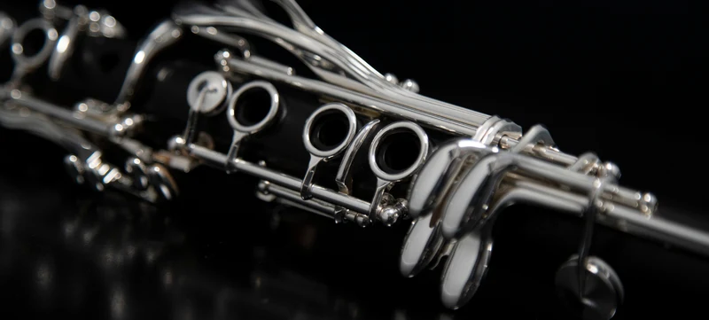
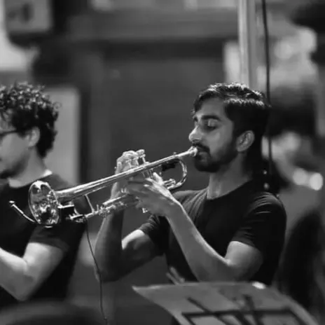
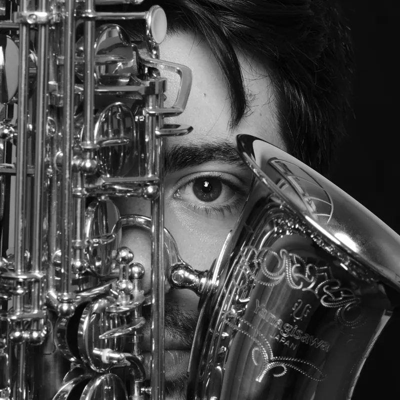
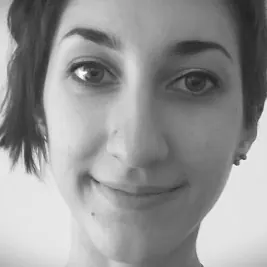
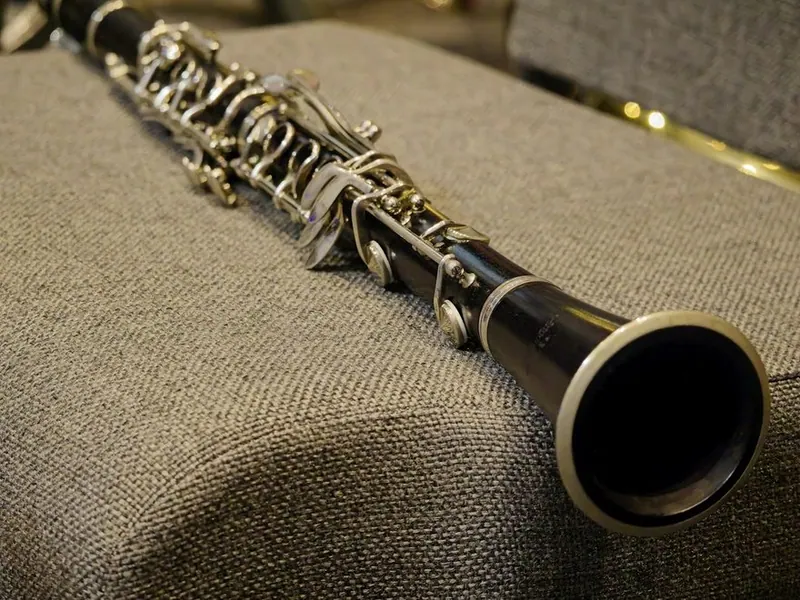

Strumenti a fiato

Categoria C: solisti (Strumenti a fiato)
- C1 Classe 2014 e anni successivi Durata massima 5 minuti
- C2 Classe 2012-2013 Durata massima 6 minuti
- C3 Classe 2010-2011 Durata massima 8 minuti
- C4 Classe 2008-2009 Durata massima 10 minuti
L’organizzazione mette a disposizione, su richiesta, il pianista accompagnatore; in tal caso è necessario versare un supplemento di 20€ e spedire una copia del brano per il pianista all’indirizzo corpobandisticocasarza@gmail.com unitamente alla scheda di iscrizione.
La Commissione

Majuran Chandrapatham
trombettista e insegnante.
Nasce a Santa Margherita Ligure il 19 Gennaio 1995.
Diplomato presso il “Conservatorio di Musica “Niccolò Paganini” nel 2019 in tromba classica.
Inizia gli studi musicali presso la Filarmonica “C.Colombo” di Santa Margherita Ligure sotto la guida del M° Giuseppe Riotti per un tempo breve per poi proseguire gli studi di teoria musicale/ repertorio bandistico con i seguenti maestri: Maurizio Baroso, Anna Maria Rocca, Alessandro Cardinali.
Studia tromba col prof. Elia Savino e con i seguenti maestri: Erika Ferroni, Piergiorgio Benvenuto, Marco Capurro, Andrea Bracco, Luigi Sechi, Adomas Kontautas.
Si perfeziona in Lituania sotto la guida del prof. Laurinas Lape e a Cagliari con Matteo Cogoni.
Studia composizione sempre presso il “Conservatorio di Musica “Niccolò Paganini” per tre anni, sotto la guida del maestro Carlo Galante.
Come trombettista, suona in diverse formazioni. Ha avuto e ha diverse esperienze bandistiche e nella formazione dell’ orchestra di fiati. In Lituania, ha collaborato con la “Sunday Brass Band” diretta dal M° Tadas Šileika.
Ha esperito la formazione del Quintetto d’ Ottoni nel quintetto “No Brass Quintet” in due occasioni il 07 Agosto 2016 ad Altare (SV) e il 19 Novembre dello stesso anno a Genova Pegli (GE), affrontando un repertorio legato alla musica da film e colonne sonore.
Affronta il repertorio jazzistico suonando assieme la “Tigullio Jazz
Big Band” nel ruolo di prima e seconda tromba.
In particolare, - il 31 Luglio e il 1° Agosto 2020 “Tigullio Big Band” & Fabio Morgera (Tromba Solista), diretta dal M°
Danilo Marchello (in cui affronta un repertorio composto e arrangiato dal Solista.- il 15 Agosto 2020 “Tigullio Big Band” & Andrea Giuffredi (Tromba Solista), diretta dal M° Danilo Marchello
(in cui affronta un repertorio legato a Morricone e le musiche da film, ovviamente arrangiate per tale
formazione).- il 4 Agosto 2021 “Tigullio Big Band” & Flavio Boltro (Tromba Solista), diretta dal M° Danilo Marchello (in
cui affronta un repertorio legato agli standard jazz).
- il 31 Luglio e il 1° Agosto 2022 “Tigullio Big Band” & Andrea Tofanelli (Tromba Solista), diretta dal M°
Danilo Marchello (Tribute to MAYNARD FERGUSON”).
Dal punto di vista sinfonico-orchestrale, affronta il seguente repertorio presso il “Conservatorio di Musica “Niccolò Paganini” di Genova: 4a sinfonia di Tchaikovsky, Rapsodia in Blue di Gershwin (come prima tromba), 5a sinfonia di Beethoven e Jazz Suite per Orchestra No. 2 di Dmitri Shostakovich.
Inoltre, suona con l’ orchestra la “Superba” Filarmonica di Chiavari affrontando il seguente repertorio: - "Symphonie Nr. 39" di W.A. Mozart- "Le Rondini della Madonna" di G.B. Campodonico (come prima tromba)- Dies Irae dal Requiem di Giuseppe Verdi (come tromba di scena).
Tutt’ ora è insegnate di strumento musicale (tromba) presso l’ Istituto Comprensivo Rapallo, Scuola Media Statale (Ex-Giustiniani) e ha affrontato un anno di studio nei Corsi di Perfezionamento tenuti dal M° ndrea Lucchi presso la fondazione “Accademia Nazionale di Santa Cecilia” nell’ a.a. 2023-24 e diverse masterclass e corsi estivi tenuti dallo stesso docente.

Gianluigi Raffo
Inizia gli studi di musica a 10 anni con l'insegnante Ilaria Canale.
Successivamente diventa allievo del M° Marco Falaschi entrando al Conservatorio G. Puccini di La Spezia. Partecipa come componente dell'orchestra del Conservatorio al concerto tenutosi il 21 giugno 2013 con Andrea Bocelli al Teatro Civico. Membro fisso del "Sax Off Limits Ensemble" registra l'omonimo cd a giugno 2014. Ha fatto parte al progetto "Per ogni sorta di stromenti" tenuta dal direttore Andrea Nicoli con il suo laboratorio di musica contemporanea, eseguendo brani in prima assoluta. Scelto per partecipare con il "Zephyrus Saxophone Quartet" all'expo di Milano 2015. Ha partecipato al 26° Festival Milano Musica eseguendo L'eco delle voci di e con Salvatore Sciarrino. Ha suonato presso l'Anton Bruckner Privatuniversität (Linz, Austria). Coinvolto nel progetto "Arte del Mascheramento" di Bruno Tommaso. Ha Insegnato nel 2022 presso il Liceo Musicale "G. Bruno" di Albenga Saxofono e Musica d'insieme. Ha partecipato alla rassegna "Del sonare digitale" a Siena, accompagnando Claude Delangle nel novembre 2023.
Marta Caccialanza
Marta Caccialanza, classe 1992, nel marzo del 2017, ha conseguito il Diploma Accademico di 2° Livello in Flauto Traverso ad Indirizzo Interpretativo con la valutazione complessiva di 110/110 e lode accademica presso il Conservatorio Niccolò Paganini di Genova sotto la guida della docente E. Cecconi. Nell'a.a 2022/2023 è stata insegnante di Flauto Traverso al Liceo Statale Sandro Pertini, e insegnante di sostegno nell'Istituto Comprensivo di Sestri Levante.
Nell'a.a. 2021/2022 è stata insegnante di Flauto Traverso e Musica da Camera al Liceo Statale Sandro Pertini di Genova; insegnante di Educazione Musicale nell'Istituto A. Gianelli di Rapallo. Durante la formazione, ha vinto una borsa di studio Erasmus nell’a.a. 2015/16 presso la ESML, Escola Superior de Musica di Lisbona, seguita dal M° Tony Pringsheim, approfondendo lo studio dell’improvvisazione sia barocca che del XX secolo. Ha vinto inoltre la borsa di studio “Romeo Lebole” nel 2013. Ancora studentessa, ha partecipato a diverse Masterclass di Flauto e Ottavino tenute da docenti del calibro di S. Dominutti (2009 e 2010), N. Mazzanti (2013), J. Gericó (2017). Finiti gli studi, durante l'anno 2017/2018 e 2018/2019, ha frequentato il Corso Annuale di Perfezionamento in Flauto tenuto dal Maestro e primo flauto del Teatro Carlo Felice di Genova Francesco Loi, e il Corso Annuale di Ottavino tenuto dal Maestro Nicola Mazzanti. All'inizio del 2018 è risultata idonea alle audizioni per la YoungTalentsOrchestra EY e per l'Orchestra Erasmus, con la quale ha partecipato al Concerto per l'Europa al Teatro Brancaccio di Roma. Nel maggio dello stesso anno ha conseguito l'attestato di semifinalista all' XI CONCORSO INTERNAZIONALE AUDIMozart!. Nel gennaio del 2018, durante la Mostra Mercato di Arte Antica nei pressi di Genova, ha preso parte, come musicista insieme al pianista Dario Bonuccelli, alla conferenza-concerto Nel salotto di Rossini a cura di Roberto Iovino. E' stata selezionata come secondo flauto per il concerto degli ex-allievi in occasione dei 50 anni della statizzazione del Conservatorio N. Paganini, eseguito sotto la direzione del M° M. Guidarini e con la partecipazione del violino solista M. Diatchenko presso il Teatro Carlo Felice di Genova. Dopo aver vinto con un quintetto di fiati la borsa di studio “Giorgio Federico Ghedini”, ha partecipato ad un Concerto Aperitivo del Teatro Carlo Felice di Genova nell’aprile del 2017. Nell’ambito dello stesso teatro, ha partecipato alla Stagione 2015/2016 con un concerto dal titolo “La ‘Canzona’: dalla Strada al Palco” composto ad hoc per essere eseguito presso il Padiglione Italia dell’EXPO 2015 di Milano. Nello stesso anno ha vinto l’audizione come secondo flauto nell’Orchestra Nazionale dei Conservatori Italiani, eseguendo due concerti diretti dai Maestri G. Grazioli ed E. Dindo.
Elisa Paganini
Elisa Paganini ha conseguito il diploma in clarinetto presso il Conservatorio G. Puccini di La Spezia sotto la guida del Maestro A. Damele.
La sua carriera musicale l'ha vista membro del quartetto Oogenesi per diversi anni, con cui ha partecipato a concorsi nazionali, ottenendo vari riconoscimenti e premi. Attualmente, Elisa è membro dell'Insolito Ensemble e si dedica all'insegnamento del clarinetto. Ricopre il ruolo di capo banda del Corpo Bandistico di Casarza Ligure e della Val Petronio, dove dirige e arrangia i brani eseguiti. La sua passione per l'insegnamento si manifesta anche nella costante attenzione alla crescita musicale dei giovani musicisti, con un approccio didattico attento e creativo.